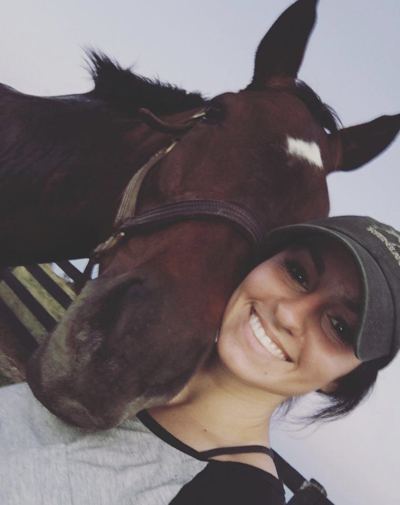

About Jo
I’m one of many individuals who says “I’m from Chicago” when others ask where I’m from. When in reality I’m from Lake Zurich, a small Northwest Suburb of Chicago, but it’s all basically Chicago, right? If we want to get even more specific, I am originally from Poland. And before you ask: tak, umiem mówić po polsku (I think you can guess what that means).
I grew up in Lake Zurich for most of my life, then went on to attend the University of Kentucky where I studied Chemistry. For one semester. Then made the right decision and transitioned to Advertising and Graphic Design. I ended up graduating with my Bachelor of Arts in Integrated Strategic Communication, which in laymen’s terms is Marketing and Advertising put together.
In my free time you will find me at the barn taking care of the larger equivalent to dogs; horses. They have been my obsession since childhood. Any chance I get I will try to slip the topic of horses into a conversation. I also enjoy staring at strangers’ dogs on the street hoping they will want me to pet them, while also smothering my own dog with hugs and kisses. And I am an avid wine and beer “taster”, and inhale cheeseburgers and pizza like oxygen.